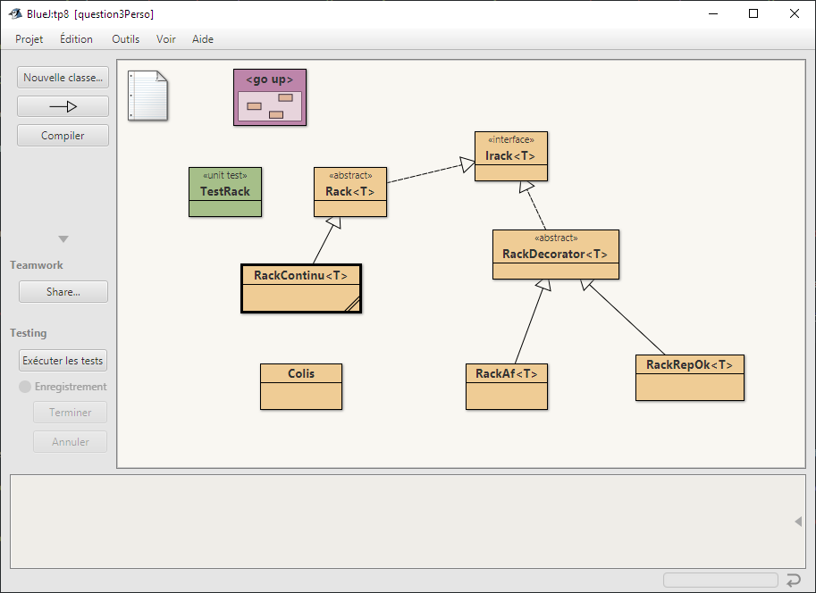
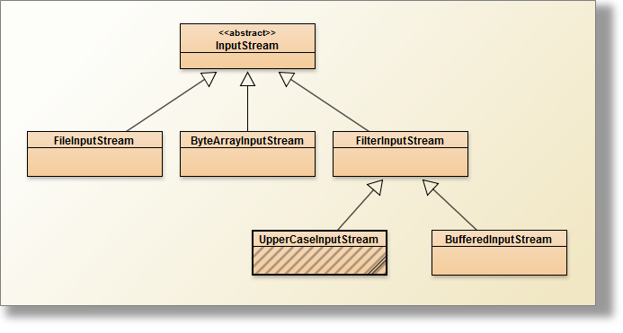

| Nom | MORO |
| Prénom | Alexandre |
| Matricule | 0g5drredxv9 |
Extrait de la classe PizzaStore :
boutonSolo.addActionListener(
new ActionListener(){
public void actionPerformed(ActionEvent ae){
pizza = new PizzaSolo();
validerLesDécorations();
}
});
boutonClassic.addActionListener(
new ActionListener(){
public void actionPerformed(ActionEvent ae){
pizza = new Classic();
validerLesDécorations();
}
});
boutonCrust.addActionListener(
new ActionListener(){
public void actionPerformed(ActionEvent ae){
pizza = new GenerousCrust();
validerLesDécorations();
}
});
parmesan.addItemListener(new ItemListener(){
public void itemStateChanged(ItemEvent ie){
if(ie.getStateChange()==ItemEvent.SELECTED){
pizza = new Parmesan(pizza);
}
afficherLaPizzaEtSonCoût();
}});
mozarella.addItemListener(new ItemListener(){
public void itemStateChanged(ItemEvent ie){
if(ie.getStateChange()==ItemEvent.SELECTED){
pizza = new FreshMozarella(pizza);
}
afficherLaPizzaEtSonCoût();
}});
ham.addItemListener(new ItemListener(){
public void itemStateChanged(ItemEvent ie){
if(ie.getStateChange()==ItemEvent.SELECTED){
pizza = new Ham(pizza);
}
afficherLaPizzaEtSonCoût();
}});
tomato.addItemListener(new ItemListener(){
public void itemStateChanged(ItemEvent ie){
pizza = new Tomato(pizza);
afficherLaPizzaEtSonCoût();
}});
mushrooms.addItemListener(new ItemListener(){
public void itemStateChanged(ItemEvent ie){
if(ie.getStateChange()==ItemEvent.SELECTED){
pizza = new Mushrooms(pizza);
}
afficherLaPizzaEtSonCoût();
}});
clams.addItemListener(new ItemListener(){
public void itemStateChanged(ItemEvent ie){
if(ie.getStateChange()==ItemEvent.SELECTED){
pizza = new Clams(pizza);
}
else clams.setState(true);
afficherLaPizzaEtSonCoût();
}});
Finalement, la complétion demandée est assez simple, à la sélection d'une pate, on va instancier l'objet de base qui servira a nos décorateurs (private Pizza pizza;).
Une action sur les boutons d'ingrédient créera une instance d'un des décorateurs (le picking de la pizza) et prendra la pizza précédemment stockées comme argument.
Et ainsi de suite pour les autres décorations.
Cette question est assez simple car on ne peut pas revenir en arrière, si tel aurait été le cas, aurions nous du utiliser une stack ?
La classe Chocolate :
public class Chocolate extends Beverage { public Chocolate() { super.description = "Chocolate"; } public double cost() { return 2.10; } }
La classe Chocolate reprend la structure des autres objects Beverage fournis. On prend soin d'hériter de la classe abstraite Beverage afin de pouvoir par la suite être décorée.
La classe BeetSugar :
public class BeetSugar extends CondimentDecorator { public BeetSugar(Beverage beverage) { super(beverage); } public String getDescription() { return super.getDescription() + ", Beet Sugar"; } public double cost() { return .10 + super.cost(); } }
La encore du classique, on hérite de la classe abstraite CondimentDecorator qui elle même hérite de Beverage, nous permettant de manipuler les décorateurs comme des Beverage.
Comme vu précédemment on prend en paramètre une instance de Beverage qui sera ensuite décoré.
Ce décorateur modifiera la description (voir question 2.3), et modifiera le coût total de la boisson (rien n'est gratuit).
On modifie la méthode toSting() de la classe abstraite CondimentDecorator et Beverage
public abstract class CondimentDecorator extends Beverage { protected Beverage beverage; public CondimentDecorator(Beverage beverage){ this.beverage = beverage; } public String getDescription(){ return beverage.getDescription(); } public double cost(){ return beverage.cost(); } public String toString() { return this.getDescription() + " $"+ cost(); } }
public abstract class Beverage { String description = "Unknown Beverage"; public String getDescription() { return description; } public abstract double cost(); public String toString(){ return this.description + " $"+ this.cost(); } }
Même si on aime les boissons sans fioritures il nous est nécessaire de connaitre son prix donc toString de Beverage devra renvoyer la syntaxe demandée.
Dans le cas d'une boisson décorée la méthode toString() de CondimentDecorator sera appelée (liaison dynamique).
Même si ! un chocolat avec de la crème, du soja et du moka .... c'est tout de même un peu spécial.
Question pas évidente, je souhaitais trouver un exemple qui m'était propre et, étant donné la période j'ai pensé aux pauvres lutins du père noël. Ces derniers entreposent les cadeaux sur des racks dans l'entrepot infini du pôle nord.
Mais ce sont des racks "magique", bien que les racks aient un nombre de colonnes et d'étagère finis, retirer un colis réordonne sans trou les colis suivants. Passant d'une colonne à un autre si nécessaire.
L'interface Irack défini les méthodes utilisables pour un rack concret
package question3Perso; public interface Irack<T> { void addItem(T t) throws Exception; T removeItem(int col, int slot) throws Exception; boolean estPlein(); int getNbCol(); int getColCapacity(); T getColis(int col, int slot) throws Exception; int freeSlots(); Object[][] af(); boolean repOk(); }
void addItem(T t) throws Exception; Ajoute un élément à la suite des autres dans la limite du stockage disponibleT removeItem(int col, int slot) throws Exception; Enlève et retourne le colis à la position demandée, réorganise le rack pour éviter au lutin de courirboolean estPlein(); Retourne si le rack est plein ou non.int getNbCol(); Retourne le nombre de colonne (ou "sous-rack").int getColCapacity(); Retourne le nombre d'étagères.T getColis(int col, int slot) throws Exception; Retourne le colis présent à une position donnée.int freeSlots(); Retourne le nombre de places libres.Object[][] af(); La fonction d'abstraction.boolean repOk(); Retroune le repOK.Le rack en lui meme se compose d'une ArrayList comportant un nombre N d'ArrayList, les bornes sont données par l'attribut colCapacity.
La fonction d'abstraction af retourne un tavbleau bidimensionnel avec pour chaque index du sous tableau les colis / cadeaux présents dans la sous ArrayList.
Le constructeur de Rackcontinu (on pourrait décider d'avoir un rack non contingu pour faire courir les lutins).
public RackContinu(int col, int capacity) { super.nbCol = col; super.colCapacity = capacity; super.rackStructure = new ArrayList<>(); for (int i = 0; i < col; i++) { rackStructure.add(new ArrayList<>(colCapacity)); }
La fonction d'abstraction
public Object[][] af() { Object[][] af = new Colis[this.nbCol][this.colCapacity]; for (int i = 0; i < rackStructure.size(); i++) for (int j = 0; j < rackStructure.get(i).size(); j++ ) af[i][j] = rackStructure.get(i).get(j); return af; }
Les décorateurs :
La classe qui décore en tenant compte de la fonction d'abstraction :
public class RackAf<T> extends RackDecorator<T>{ public RackAf(Irack<T> rack) { super(rack); } @Override public void addItem(T t) throws Exception { int freeSlots = super.freeSlots(); super.addItem(t); Colis[][] af = (Colis[][]) super.af(); int count = super.getNbCol() * super.getColCapacity(); try{ Colis current; for (int i = 0; i < super.getNbCol(); i++) for (int j = 0; j < super.getColCapacity(); j++) { current = af[i][j]; if (current != null) count--; } } catch (Exception e) { System.out.println(e.getMessage()); } assert (count == freeSlots -1); } @Override public T removeItem(int col, int slot) throws Exception { int freeSlots = super.freeSlots(); T item = super.removeItem(col, slot); Colis[][] af = (Colis[][]) super.af(); int count = super.getNbCol() * super.getColCapacity(); try { Colis current; for (int i = 0; i < super.getNbCol(); i++) for (int j = 0; j < super.getColCapacity(); j++) { current = af[i][j]; if (current != null) count--; } } catch (Exception e) { System.out.println(e.getMessage()); } assert (count == freeSlots + 1); return item; } @Override public boolean estPlein(){ return this.freeSlots() == 0; } @Override public int getNbCol() { int nbCol = super.getNbCol(); Colis[][] af = (Colis[][]) super.af(); int afNbcol = af.length; assert nbCol == afNbcol; return nbCol; } @Override public int getColCapacity(){ int colCapacity = super.getColCapacity(); Colis[][] af = (Colis[][]) super.af(); int afColCapacity = af[0].length; assert afColCapacity == colCapacity; return colCapacity; } @Override public T getColis(int col, int slot) throws Exception { Colis colis = (Colis) super.getColis(col, slot); Colis[][] af = (Colis[][]) super.af(); assert colis.getName().equals(af[col][slot].getName()); return (T) colis; } @Override public int freeSlots(){ int freeSlots = super.freeSlots(); int afFreeSlots = super.getNbCol() * super.getColCapacity(); Colis[][] af = (Colis[][]) super.af(); try { Colis current; for (int i = 0; i < super.getNbCol(); i++) for (int j = 0; j < super.getColCapacity(); j++) { current = af[i][j]; if (current != null) afFreeSlots--; } } catch (Exception e) { System.out.println(e.getMessage()); } assert freeSlots == afFreeSlots; return freeSlots; } }
Je n'ai pas bien compris ce principe de fonction d'abstraction et de prépost conditions ...
public class UpperCaseInputStream extends FilterInputStream { protected UpperCaseInputStream(InputStream in) { super(in); } @Override public int read() throws IOException { int c = super.read(); if (c == -1) return -1; else return Character.toUpperCase(c); } @Override public int read(byte b[]) throws IOException { return this.read(b, 0, b.length); } @Override public int read(byte b[], int off, int len) throws IOException { int result = super.read(b, off, len); for (int i = off ; i < off + result ; i++) b[i] = (byte) Character.toUpperCase((char) b[i]); return result; } }
Reprenons le schéma donné en énoncé :
Notre classe va devoir hériter de FilterInputStream, et masquer les différentes méthode read() (une sans paramètres, et deux surcharges)
javadocPour la méthode read() on vérifie pour chaque lecture d'octet que l'on a pas atteint la fin du fichier, auquel cas on retourne -1.
dans le cas contraire, on cast l'octet en (char) puis on invoque la méthode toUpperCase() qui se chargera de vérifier que le caractère en paramètre dispose d'une majuscule ou non.
La méthode read(byte b[]) prend un tableau de byte d'une longeur donnée et sera remplie par la méthode read(), il s'agit ici d'un cas d'écriture de la classe qui suit.
La méthode read(byte b[], int off, int len) va remplir un tableau de byte mais en prenant compte un offset et une longueur d'octets lu.
par exemple, pour un tableau de taille 7, avec un offset de 2 et une longueur de 3 on aura :
[0,0,xx,xx,xx,0,0] avec xx l'octet lu, l'offset + la longueur ne devra bien sur pas dépasser la taille totale du tableau.
Je ne vois pas encore ce a quoi peut me servir une telle méthode pour le moment, en expérimentant son utilisation, je me suis amusé a insérer des caractères entre chaque "trame" lue.
Exemple :
public void testInpustreamWithByte() throws Exception{ InputStream is = new UpperCaseInputStream(new FileInputStream(new File("question4\\README.TXT"))); byte[] data = new byte[7]; int byteRead = is.read(data, 2, 4); while(byteRead != -1) { for (int i = 0; i < 2; i++) { data[i] = (byte) 'Z'; } for (byte b : data) System.out.print((char) b); byteRead = is.read(data); } is.close(); }
PushbackInputStream va nous permettre de "remettre un octet lu dans le stream pour le relire ensuite". Il est possible de définir une limite de pushback afin de limiter cette fonctionnalitée.
La classe de test ci-dessus se limite au premier mot du fichier texte et fait apparaitre que l'objet PushbackInputStream se comporte comme un InputStream mais dispose également de fonctionnalité supplémentaire.
La méthode unread() n'étant pas déclarée dans la méthode abstraite inpuStream, il n'est pas possible de passer directement par un type déclaré "inpuStream" sans caster ou déclarer directement un objet de type PushbackInputStream.
public void testPushPackUpperCase_README_TXT() throws Exception{ StringBuilder output = new StringBuilder(); PushbackInputStream pbis = new PushbackInputStream( new UpperCaseInputStream(new FileInputStream(new File("question4\\README.TXT")))); int count = 0; int c = pbis.read(); // Sans le unread() while(count < 5){ output.append((char) c); c = pbis.read(); count++; } pbis.close(); assertEquals("TESTS", output.toString()); output.delete(0, output.length()); count = 0; // Avec le unread() PushbackInputStream pbis2 = new PushbackInputStream( new UpperCaseInputStream(new FileInputStream(new File("question4\\README.TXT")))); c = pbis2.read(); while(count < 5){ output.append((char) c); pbis2.unread(c); c = pbis2.read(); count++; } assertEquals("TTTTT", output.toString()); pbis2.close(); }
Drôle de TP ... une première et deuxième question qui se fait sans trop de heurts, et une Q3 qui m'a totalement décontenancé. J'avais voulu un exemple un peu personnel et je me suis un peu perdu dans ce que j'avais à faire. J'ai été tenté de reprendre un des exemples fournis et de "l'adapter" (certains appelle ça rendre hommage ... ), mais j'avais déjà plusieurs heures sur mon exemple et je ne voulais pas le mettre au rebus. Je livre ici une réponse incomplète et je m'en excuse.
Il resterait bien du temps, mais professionnellement et personnellement cette fin d'année est très compliqué et j'ai un peu peur de passer un temps qui est précieux au profit de concepts plus importants (j'ai encore un peu de mal avec l'injection de dépendances).
Merci au forum qui m'a évité de me prendre les pieds dans le tapis de la Q4, je n'aurais pas forcément pensé à vérifier les surcharges de la méthode read().
Cette dernière question m'a d'ailleurs obligé à réaliser plusieurs classes de tests pour comprendre le fonctionnement de l'inputStream, qui pour le novice que je suis n'a rien d'évidente.
Bien que n'ayant pas de congés en cette fin d'année, je vais passer ces périodes de noël avec mes proches et en chaude compagnie du TP9.
Je vous souhaite à vous et vos proches de très bonnes fête de fin d'année.
Head first design pattern, page 102
http://bliaudet.free.fr/IMG/pdf/DPTLP.pdfDes exemples et quelque notes sur l'inputStream java lorsque je tentais de comprendre le fonctionnement de la méthode read(byte[] b, int off, int len)
Et comme le dirait un pilote de mon enfance (lorsque le dakkar était encore un évènement)